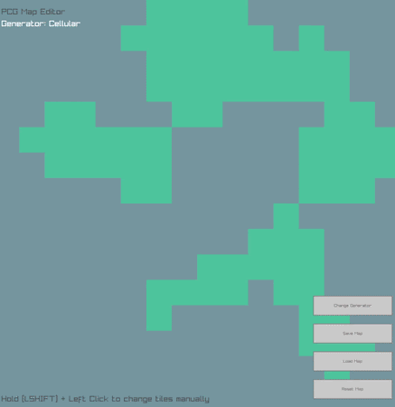
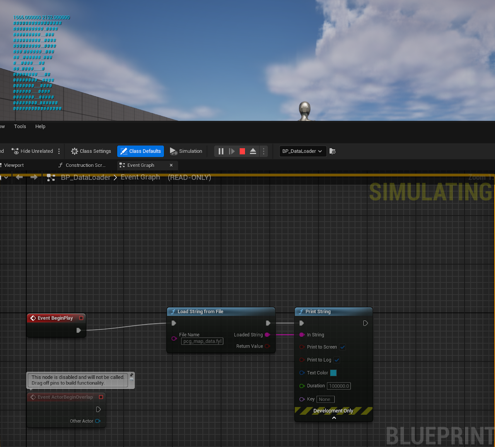

Tools
Raylib/ENet Listen Server
A networked game client with server hosting capability, built using Raylib and the ENet UDP library. Forked from the raylib-extras/networking_example repo, the original project only included dedicated server and client builds, so I decided to create a listen server build. This project was my first time building a networked game outside of Unreal, as well as using multi-threading.
Features
- Host & client capabilities
- Multi-threaded client/server design
- Supports up to 8 players (with ability to scale to more)
Details
- Utilised Win32 threads
- Designed to start server as separate thread on hosting client only
- Client can enter any server IP to join
Challenges
- Multi-threading
- Needed to refactor parts of the server to avoid race conditions
- Saved performance by only starting the server thread on hosting clients
- Networking
- Learnt how to use the ENet UDP library to autoconnect the host to their local server
PCG Map Editor

A lightweight map editor application I created with C++ using the Raylib graphics library for 3147GFS Advanced Games Programming. This project was my first foray into the C/C++ family, as well as working outside of a game engine. I learnt and utilised a variety of modern programming principles such as OOP and RAII.
Features
- 3 PCG algorithms (Cellular Automata, Perlin Noise, Random)
- Manual tile editing
- Save/load maps as custom .fyl binary file
Details
- Implemented cellular automata and Perlin noise functions in C++
- Utilised basic Win32 functions for save/open explorer dialogs
- Designed modular functions for re-use in further projects (this tool is intended for a future game project)
Challenges
- Memory management
- Utilised smart pointers to manage generator types, eliminating the need for manual new/delete
- Object oriented design
- Generators are derived from a base MapGenerator class, defining their own generation logic
- PCG algorithms
- Designed & implemented a cellular automata algorithm from scratch
UE5.4 Data IO Plugin

A simple UE5.4 Blueprint Function Library plugin built for importing map data exported from the PCG Map Editor above. This project was my first time using C++ in Unreal Engine, learning Unreal-specific syntax and creating plugins.
Details
- Can load any file (.txt, .fyl, etc.) as a string
- Built as a plugin, so it is reusable in any compatible project
Challenges
- Working with Unreal Engine 5 C++
- Utilises UE5 custom library types (FString)